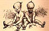

The following passages were quoted in at least one of the contemporary reviews of the novel. Using the links after each quotation, you can either go to the review in which the passage was quoted, or see the passage in the context of the chapter in which it originally appeared.
| Review |  | MT's Text |